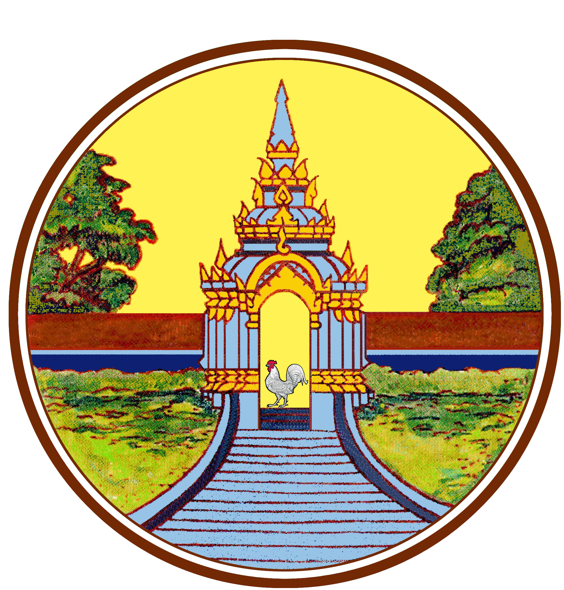
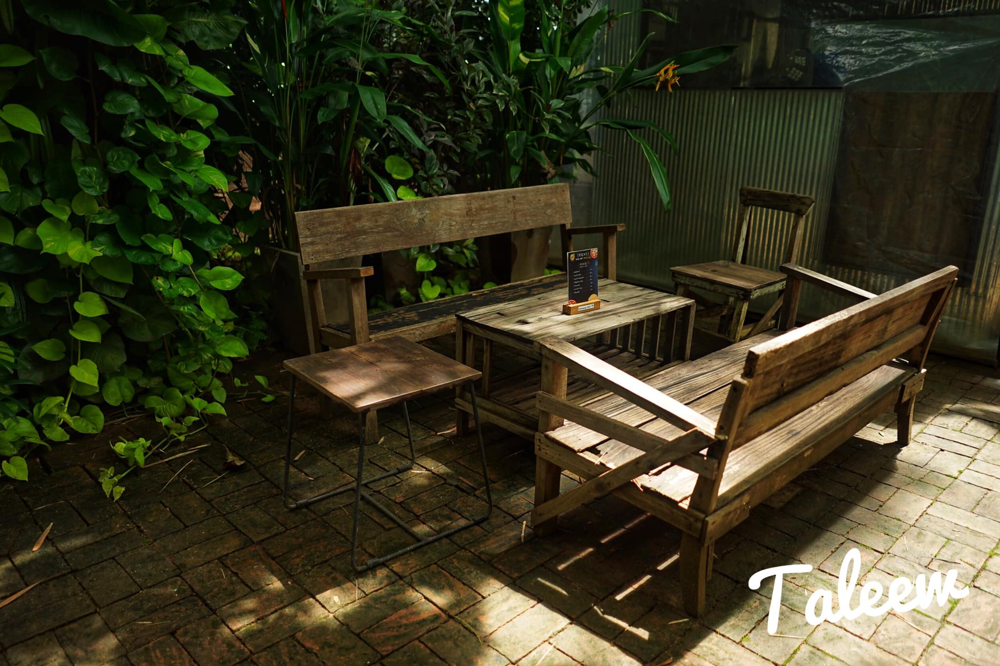
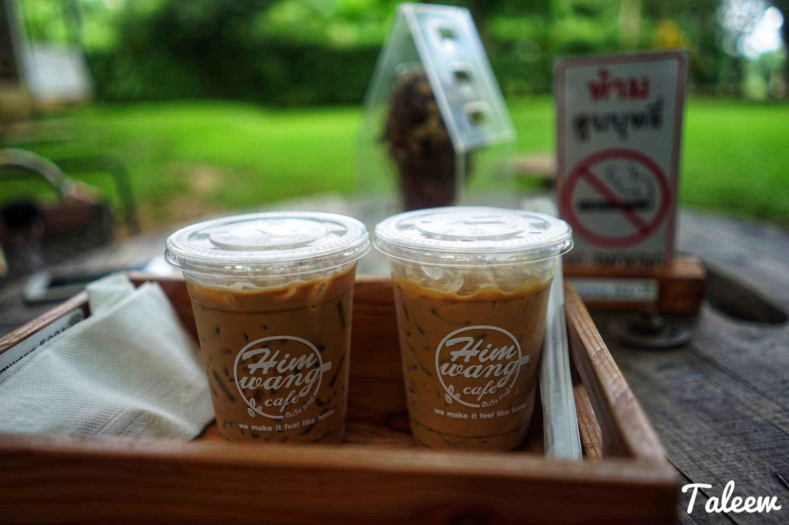
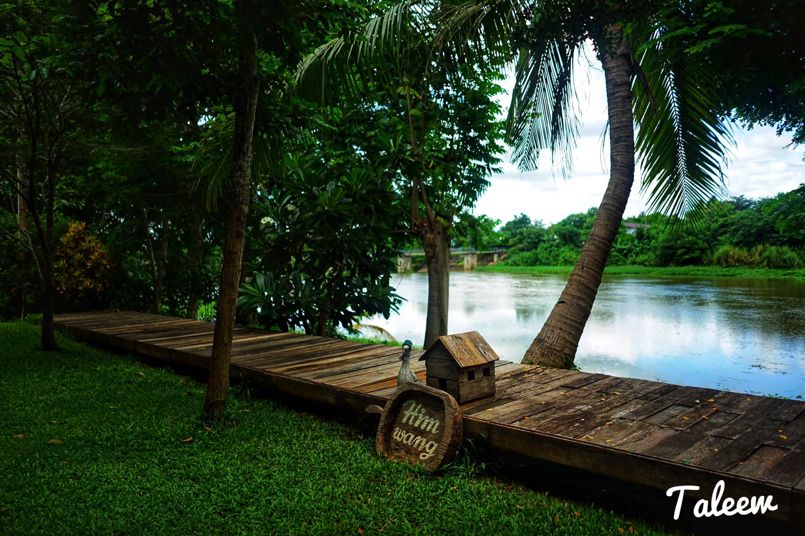
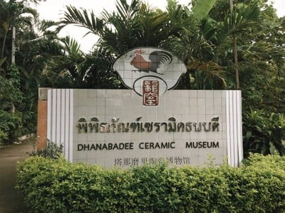
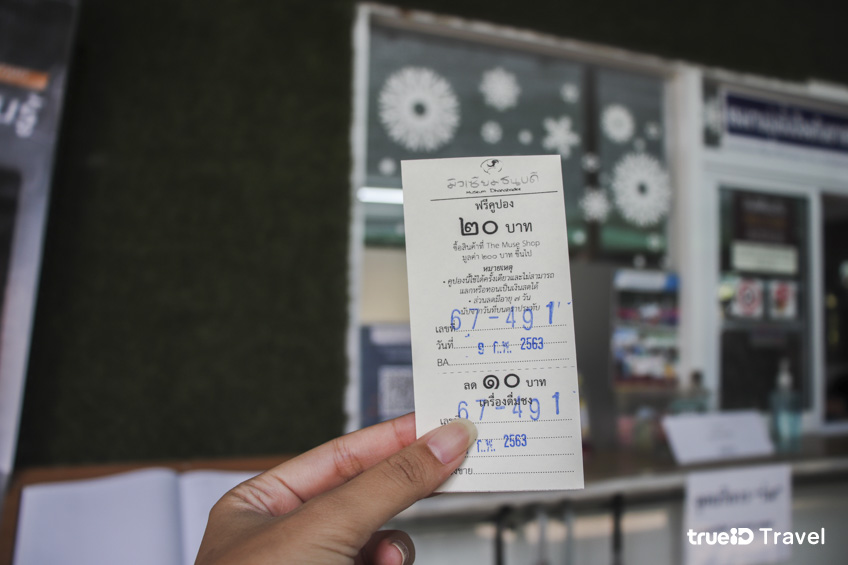
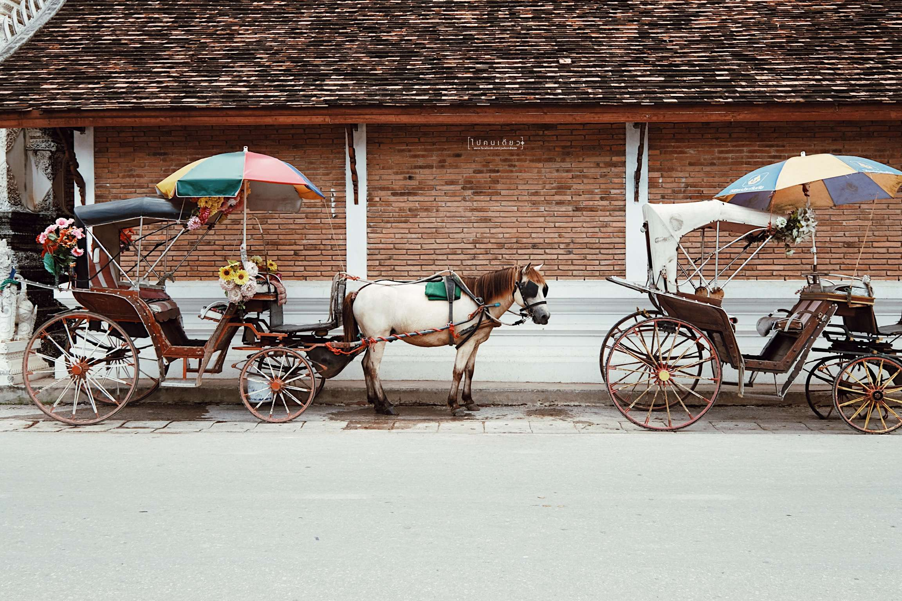
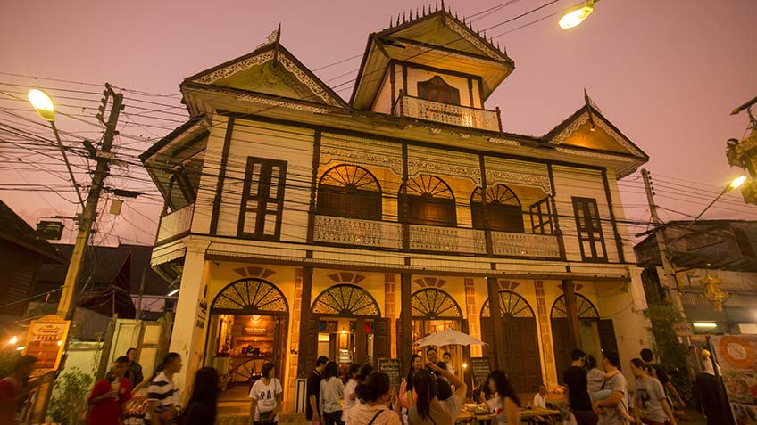

เที่ยวทั่วไทย
ท่องเที่ยว 1 วันในจังหวัดลำปาง
☆⌒🧳*👨👩👧👦ノ🌈ヽ✿ﾟ✈️

"ถ่านหินลือชา รถม้าลือลั่น เครื่องปั้นลือนาม งามพระธาตุลือไกล ฝึกช้างใช้ให้ลือโลก "
สถานที่ 1 : วัดพระธาตุลำปางหลวง
องค์พระธาตุลำปางหลวง เป็นประธานมีบันไดนาคนำขึ้นไปสู่ซุ้มประตูโขง ถัดซุ้มประตูโขงขึ้นไปเป็น วิหารหลวง บริเวณทิศเหนือขององค์พระธาตุมีวิหารบริวารตั้งอยู่คือ
วิหารน้ำแต้ม และ วิหารต้นแก้ว ด้านตะวันตกขององค์พระธาตุประกอบด้วย วิหารละโว้ และ หอพระพุทธบาท ด้านใต้มี วิหารพระพุทธ และอุโบสถ ทั้งหมดนี้จะแวดล้อม
ด้วยแนวกำแพงแก้วทั้งสี่ด้าน นอกกำแพงแก้วด้านใต้มีประตูที่จะนำไปสู่เขตสังฆาวาส ซึ่งประกอบด้วยอาคาร หอพระไตรปิฎก กุฏิประดิษฐาน พระแก้วดอนเต้า อาคารพิพิธภัณฑ์และกุฏิสงฆ์
เกร็ดน่ารู้ : การขอพ่อจากองค์พระธาตุ จะขอพรที่เกี่ยวหน้าที่การงาน การค้าขาย การเริ่มต้นชีวิตใหม่ และ การเรียน
ความพิเศษ : ชมมหัศจรรย์เงาพระธาตุและพระวิหารในด้านมุมกลับ
เวลาเปิด-ปิด :7:30–17:00
ที่ตั้ง :271 ตำบล ลำปางหลวง อำเภอเกาะคา
Google Map :https://maps.app.goo.gl/mnN5YUWT7r3bpEZN8
สถานที่ 2 : วัดพระธาตุดอยพระฌาน
ต้นโพธิ์สีทอง "โพธิปักขิยธรรม" บนพื้นหลังสีดำ ด้านหน้าวิหารสถาปัตยกรรมศิลปะแบบล้านนาผสมผสาน ประดับด้วยงานแกะสลักปิดทองลวดลายประณีตงดงามอ่อนช้อย ซุ้มบันไดพญานาคที่ทอดตัวอย่างสวยงาม ด้วยตัววัดอยู่บนยอดเขา ทำให้มองเห็นวิวทิวทัศน์ของโค้งน้ำ และทุ่งนากว้างใหญ่ ของอำเภอแม่ทะ, อำเภอเกาะคา และอำเภอเมืองของจังหวัดลำปางได้รอบทิศแบบ 360 องศา และยังเป็นจุดชมพระอาทิตย์ขึ้นที่สวยงามมาก และหากมาในช่วงฤดูฝน และฤดูหนาว ก็จะเห็นทะเลหมอกในช่วงเช้าๆ
เกร็ดน่ารู้ :พระพุทธรูปประทับนั่งปางสมาธิองค์ใหญ่ ขนาดหน้าตัก 14 เมตร สีเขียว ประดิษฐานโดดเด่นอยู่บนเนินเขา ที่มีพุทธลักษณะคล้ายกับ พระใหญ่ไดบุตสึ วัดโคโตคุ ประเทศญี่ปุ่น
ความพิเศษ :กราบไหว้ขอพร 3 จุด ในที่เดียวได้แก่ พระใหญ่ไดบุตซึ ,สมเด็จพระพุทธสิกขีทศพลญาณ , องค์พระธาตุดอยพระฌาน
เวลาเปิด-ปิด :06:00 - 16:30
ที่ตั้ง :วัดพระธาตุดอยพระฌาน ตำบลป่าตัน อำเภอแม่ทะ
Google Map :https://maps.app.goo.gl/Aimkbe2PYKHXXDBM7
สถานที่ 3 : Himwang Café ฮิมวัง คาเฟ่



เป็นคาเฟ่ เน้นการตกแต่งแบบมินิมอลง่ายๆ เฟอร์นิเจอร์และการตกแต่งร้านส่วนใหญ่จะเป็นสไตล์แฮนด์เมดเกือบทั้งหมด มีบริเวณโอบล้อมด้วยต้นไม้น้อยใหญ่ ร่มรื่นมาก
มีอาหาร ขนมให้เลือกชิมมากมาย
ความพิเศษ : ชมบรรยากาศติดริมแม่น้ำวัง
เวลาเปิด-ปิด :10:00 - 17:00
ที่ตั้ง :ตำบล ชมพู อำเภอเมืองลำปาง
Google Map :https://maps.app.goo.gl/CD5pTdMd1Nj7w52A7
สถานที่ 4 : พิพิธภัณฑ์เซรามิคธนบดี


รียนรู้ความเป็นมาของชามตราไก่ สินค้าเลื่องชื่อของเมืองลำปาง พร้อมไฮไลท์ทั้งชามไก่ขนาดเล็กที่สุดในโลก ชามไก่ทองคำแท้ และชามไก่บาง ชมสาธิตการปั้นชามแบบโบราณ สมัยใหม่และการวาดชามไก่สุดวิจิตร งดงามและอ่อนช้อย ชมเตามังกรโบราณและโรงถ้วยขนมแห่งแรกของประเทศไทย รวบรวมไว้ที่นี่ที่เดียว
พาเที่ยวโดยวิทยากรมากความสามารถ ไปชมการสาธิตการผลิตแบบตัวต่อตัว สนุก ตื่นเต้น ได้ความรู้ เหมาะกับการเรียนรู้ของทุกเพศทุกวัย ไม่ว่าจะมาเดี่ยว ครอบครัว หรือมาเป็นหมู่คณะ เรามีวิทยากรเตรียมพร้อมต้อนรับนักท่องเที่ยวเสมอ
เกร็ดน่ารู้ :ต้นตระกูลธนบดีสกุลผู้ค้นพบแร่ดินขาวและก่อตั้งโรงงานเซรามิกแห่งแรกของลำปาง
ความพิเศษ : ชามตราไก่จิ๋ว ขนาดเล็กกว่าเมล็ดข้าวเปลือก มีเส้นผ่าศูนย์กลาง 3.5 มิลลิเมตร,ชามตราไก่ทองคำ มูลค่า 500,000 บาท จากทองคำแท้ 99% มีเส้นผ่าศูนย์กลาง 17 นิ้ว ใต้ชามมีโลโก “เล้งเอี้ย”, ชามตราไก่ที่บางที่สุด ความหนาเพียง 0.9 มิลลิเมตร (900 ไมครอน)
ค่าเข้าชม : 1.ผู้ใหญ่(ไทย) ค่าเข้าชม 60 บาท 2.นักเรียน/ นักศึกษา ค่าเข้าชม 30 บาท 3.ต่างชาติ 100 บาท (เด็กต่างชาติ 60 บาท) ชมฟรี 1.เด็กที่อายุต่ำกว่า 12 ปี 2.ผู้สูงอายุ 60 ปีขึ้นไป 3.นักบวช/ผู้พิการ
เวลาเปิด-ปิด :09.00-17.00
ที่ตั้ง :32 ถนนวัดจองคํา พระบาท ซอย 1 ต.พระบาท อําเภอเมืองลําปาง
Google Map :https://maps.app.goo.gl/kE79YDp6yNN3xKa68
สถานที่ 5 : รถม้า(หน้าศาลากลางหลังเก่า)

เริ่มตั้งแต่รัชสมัยของพระบาทสมเด็จพระจอมเกล้าเจ้าอยู่หัว เมืองไทย
ได้รับตกทอดมาจากอังกฤษและอินเดียเป็นส่วนใหญ ่ โดยถือกันว่ารถม้าเป็นพาหนะคู่บ้านคู่เมือง ถึงขนาดในรัชสมัย
ของพระบาทสมเด็จพระจอมเกล้าเจ้าอยู่หัว ทรงสั่งรถม้าเข้ามาเป็นจํานวนมากโดยให้ใช้เป็นราชรถหลวงและตั้งกรม
ดูแล ชื่อว่า “กรมอัศวราช” จนกระทั่งรถยนต์เริ่มเข้ามามีบทบาท รถม้าจึงถูกนําไปอยู่ตามหัวเมืองต่างๆ พร้อมๆกับ
พวกแขกมลายที่ช่วงหนึ่งเข้ามาขับรถม้าในเมืองไทย
เกร็ดน่ารู้ : จะทํารถม้าขึ้นใช้เอง ศาสตร์การเพาะ พันธุ์ม้า ดูลักษณะม้า และการส่งต่อองค์ความรู้รถม้าอย่างเป็นขั้นเป็นตอน
ความพิเศษ : เดินทางไปยังสถานที่แหล่งเรียนรู้ต่าง ๆ และกลับมาที่จุดเดิม เป็นเวลา 20 นาที/ 200 บาท
เวลาเปิด-ปิด : 16.00 - 20.00 น.
ที่ตั้ง :ตำบล สบตุ๋ย อำเภอเมืองลำปาง
Google Map :https://maps.app.goo.gl/74hnuxhKEnE3qvvn6
สถานที่ 6 : ถนนคนเดิน"กาดกองต้า"

เป็นอีกหนึ่งสถานที่ ที่เป็นที่มาของอดีตรุ่งเรืองเมืองลำปาง ความหมายของ “กาดกองต้า” ก็คือ “ตลาดท่าน้ำ” เป็นแหล่งชุมชนผู้คนหลากหลายเชื้อชาติเผ่าพันธุ์ ทั้งฝรั่ง พม่า ไทใหญ่ ไทลื้อ และจีนฮ่อ สืบเนื่องเพราะก่อนนั้นธุรกิจทำไม้มักใช้แรงงานพม่าเป็นผู้คุมการล่องซุงในแม่น้ำวัง กระทั่งพ่อค้าคนจีนพร้อมเรือสินค้าเข้ามามีบทบาทมากขึ้นเพราะขยันขันแข็งและหัวการค้าดีกว่า จึงค่อยๆมีบทบาทเบียดชาวพม่าไทใหญ่และไทลื้อออกไปจากตลาดการค้าได้ในเวลาต่อมา
เกร็ดน่ารู้ : เป็นคำล้านนา แปลว่าตลาดถนนท่าน้ำ เป็นตลาดโบราณของเมืองลำปาง อายุร้อยกว่าปี ตั้งอยู่ริมแม่น้ำวัง เป็นชุมชนชาวจีน เป็นท่าเรือขนถ่ายสินค้าในสมัยโบราณ
ความพิเศษ : “ชุมชนกาดกองต้า” ตั้งแต่หัวถนนยาวไปจนถึงเชิงสะพานรัษฎาภิเศก ซึ่งเป็นอีกสัญลักษณ์สำคัญของจังหวัดลำปาง ระยะทางไม่ไกลราว 1 กม. ไล่เรียงด้วยอาคารบ้านเรือนเก่าหลายหลังอายุอานามราวหนึ่งศตวรรษ
เวลาเปิด-ปิด :ทุกวันเสาร์และอาทิตย์ 16.00-22.00 น.
ที่ตั้ง :ถนน ตลาดเก่า ตำบล สวนดอก อำเภอเมืองลำปาง
Google Map :https://maps.app.goo.gl/Dqn7PiTbdnUnj4BJ8
(✿◡‿◡)